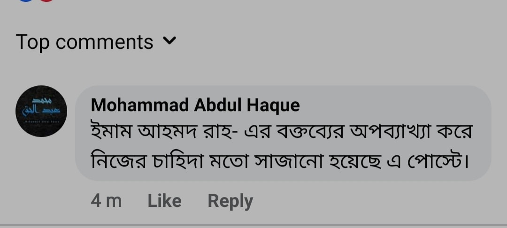

ইমাম আহমদ রাহ-এর আল্লাহ'র আকার অস্বীকার
২০ মার্চ, ২০২১
"ইমাম আহমদ রাহ-এর আল্লাহ'র আকার অস্বীকার"
এ শিরোনামে একটি পোস্ট ঘুরে ঘুরে টাইমলাইনে আসছিল। লিখেছেন Ijharul islam সাহেব। আর তা আশআরি-মাতুরিদি গ্রুপে শেয়ার দিয়েছেন Affan Bin sharfuddin সাহেব। আমি সে পোস্টে কমেন্ট করেছিলাম।
//ইমাম আহমদ রাহ-এর বক্তব্যের অপব্যাখ্যা করে নিজের চাহিদা মতো সাজানো হয়েছে এ পোস্ট।//
ব্যস, এটুকুই। এতে মুহুর্তের মধ্যেই তারা আমাকে ব্লক মেরে দেয় হানাফি ফিকহ ও আশআরি-মাতুরিদি গ্রুপ থেকে। অন্তত জিজ্ঞেস করতে পারত যে, আমার দলিল কী?
এ মন্তব্যের প্রভাব যে এ তো গভীর হবে তা আমি কল্পনাও করি নি।☺️
যা-ই হোক, কথা সেটা না, কথা হলো সামান্য একটা গ্রুপের অথোরিটি হয়ে যদি তারা আমাদের যবান স্তব্ধ করে দিতে চায়, তাহলে এই ভাইয়েরা যদি দেশের অথোরিটি পেয়ে বসে, তখন তো আমরা যারা আছারি/সালাফের আকিদাহ পোষণ করি, তারা আকিদাহ নিয়ে কথা বলার সুযোগই পাবেন না। আর সব আছারিদের ফেবু আইডি, পেজ, গ্রুপ যাবে চান্দে☺️
মাদার অব মাফিয়া বাকশাল কায়েমের পরও তাদের নিয়ে দু' চারটা সমালোচনা দেশে পসিবল। কিন্তু আকিদার এসব ইমাম(!) সাহেবরা ইমামতে কুবরা'র চেয়ারে বসলে তা পসিবল তো নয়-ই উল্টো তাদের আকিদাহ গ্রহণ করতে বাধ্য করা হবে। নাহলে দেশ ছেড়ে দিতে হবে।
